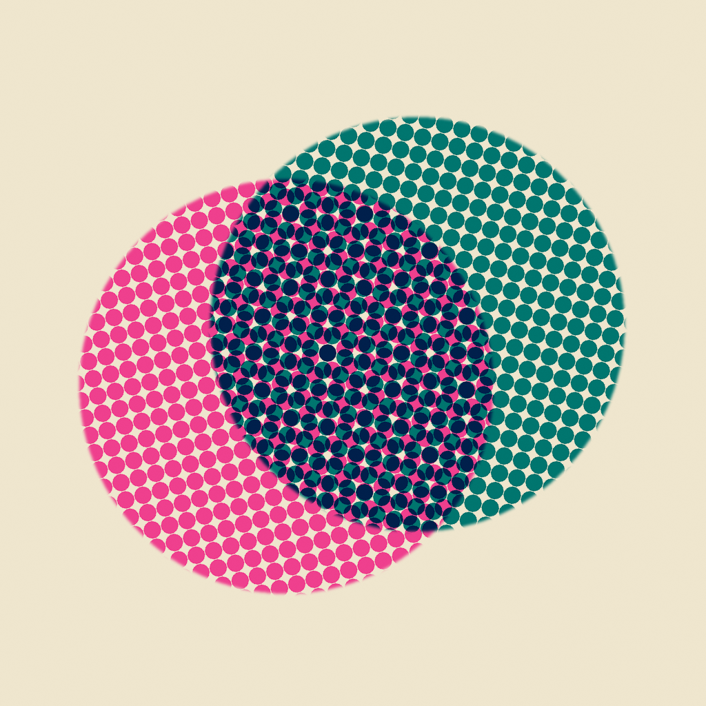
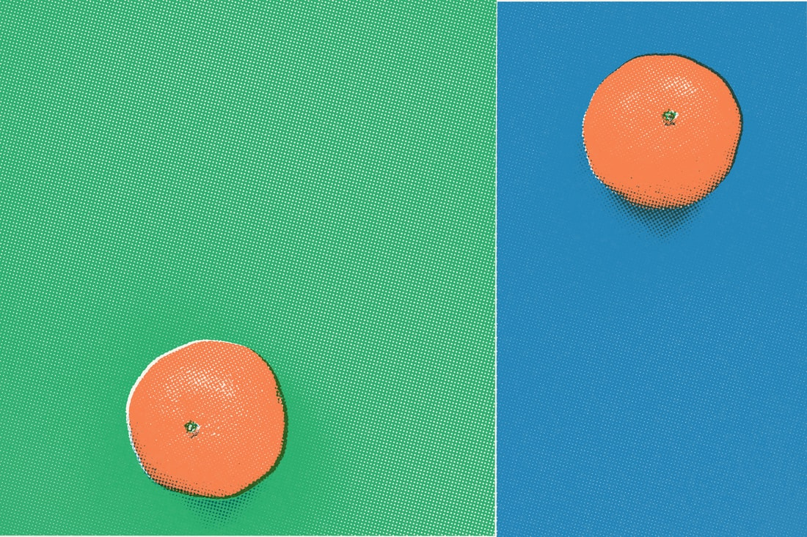
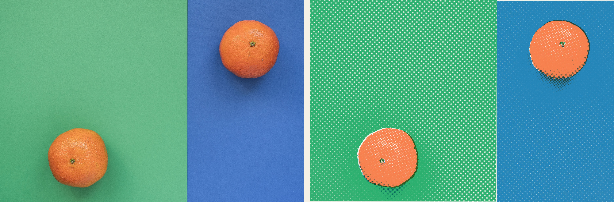
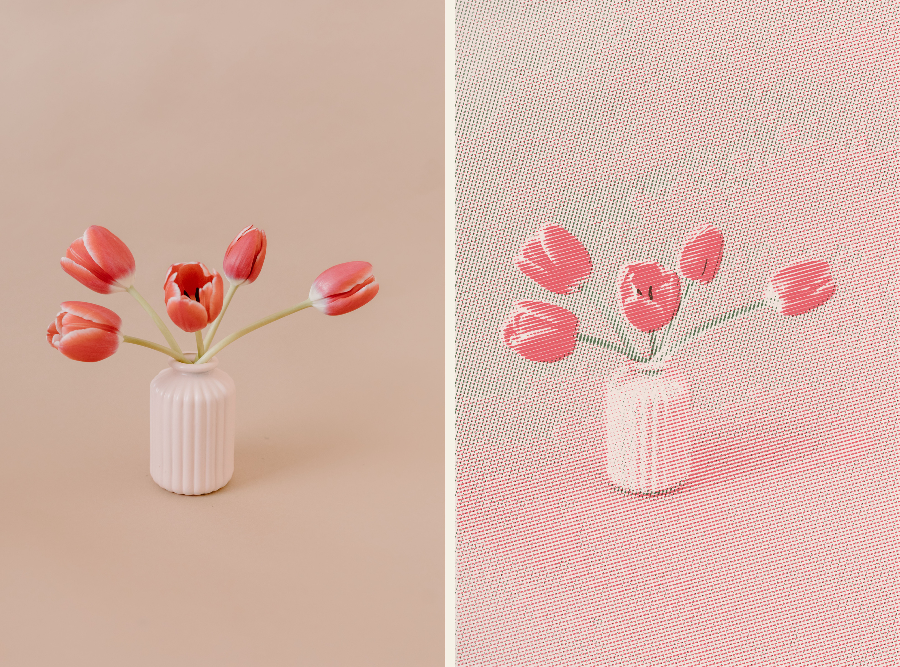
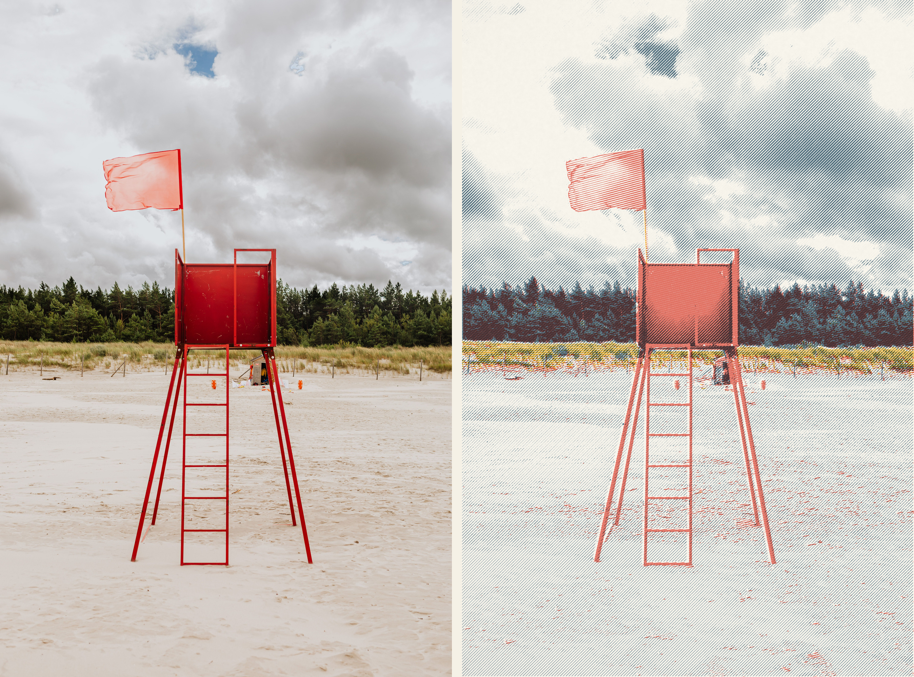

{kind=link}
{kind=link}
{kind=link}
{kind=link}
{kind=link}
{kind=link}
{kind=link}
{kind=link}
{kind=link}
Find a direction.
Quick Press, Test Strips and Ink Match give you different ways to explore a photograph.

Pressed. MEDIA EDITION · SEPTEMBER 2026A POCKET PRINT STUDIO
Choose the colours. Shape the halftone. Let the paper become part of the picture.
Pressed turns your photographs into expressive digital print artwork on iPhone and iPad.
Free to download · Watermark-free image exports
Optional Plus: US$9.99 once

Original photo: Andre Taissin / Pexels. Print treatment: Pressed.
WATCH THE TRANSFORMATION
A 24-second introduction to three photographs and the individual presses that give them a new visual language.
Silent film · English titles · Actual exported artwork
Download the film ↓SECOND IMPRESSIONS
An orange. A vase of tulips. An empty lifeguard tower. Three photographs become six individually composed digital prints.
Every treatment has its own palette, paper and screen. Browse the work, inspect the original, or download a press to explore with an image of your own.
Read the project story ↗Custom recipes made for this study. Digital artwork exported with Pressed; all six full-size JPEGs are at least 2,731 pixels wide. Captions & credits ↗
FROM PHOTO TO PRINT
Original photograph on the left. Pressed export on the right. Each pair keeps the same framing so you can look closely at the colour, surface and detail.



PRESSED 2.0 · IPHONE + IPAD
Start with a press. Make it your own. Explore variations, build a photo series and carry the final image into your next creative project.
Quick Press, Test Strips and Ink Match give you different ways to explore a photograph.
Change inks, screen shapes and angles. Balance paper, texture, dot gain and registration.
Keep a series in a Press Set, with space to refine the character of each image.
START FREE
Watermark-free image exports up to 4,096 pixels. Photo processing happens on your device.
PRESSED PLUS
US$9.99 once. Custom ink export, selected premium looks, exports up to 6,000 pixels, stickers, PDF separations, saved presses, Press Set package export and Press Run video.
US storefront, checked 11 September 2026. Regional prices vary. Export dimensions depend on the source image. Full fact sheet ↗
FOR EDITORS & CREATORS
Download the press book for a quick introduction, take the complete media pack, or choose individual files from the gallery.
INDEPENDENTLY MADE
Independent developer of Pressed, bringing the creative decisions of print to photographs on iPhone and iPad.
MEDIA CONTACT
press@almostmatter.com ↗For interviews, testing questions or a particular image format.
{kind=link}
{kind=link}
{kind=link}